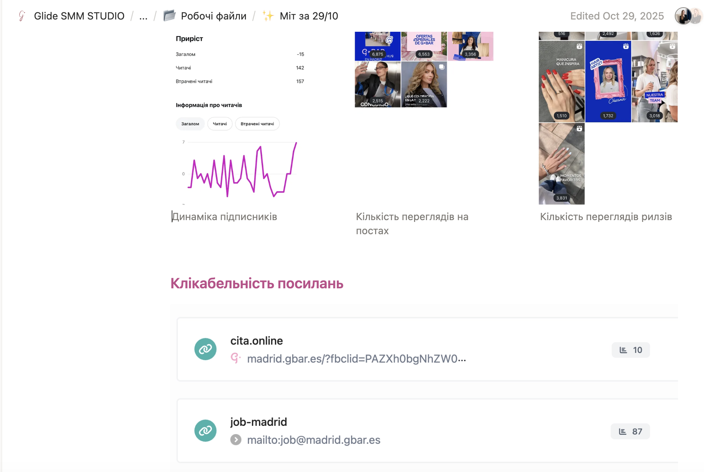
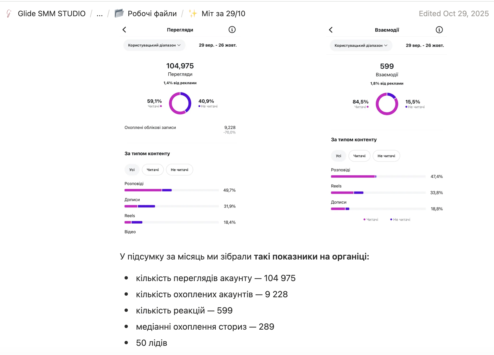
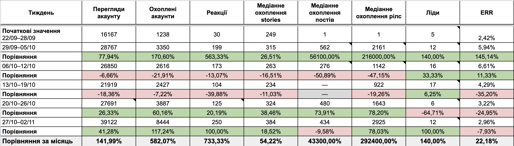
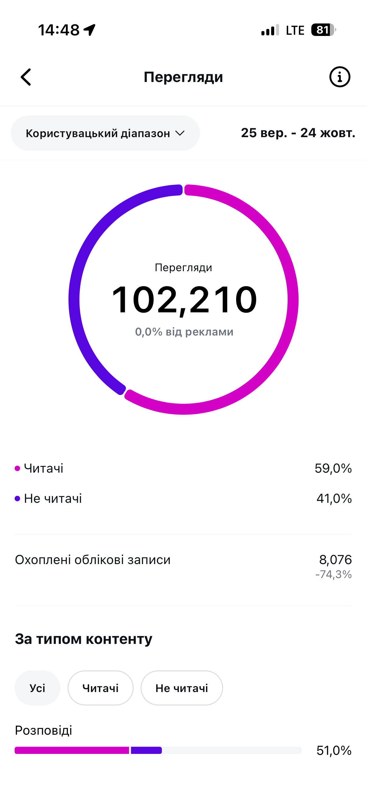
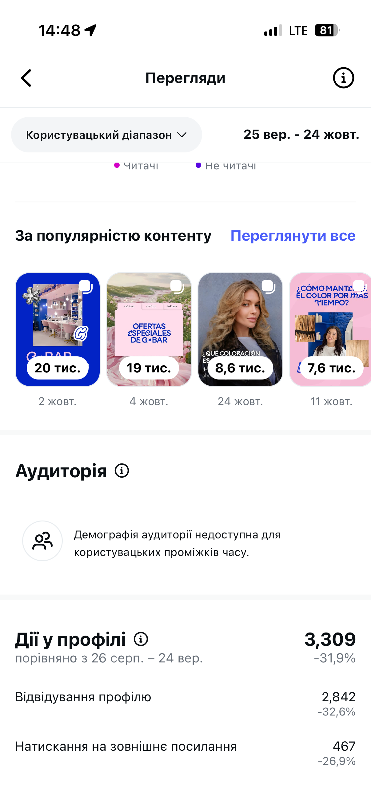
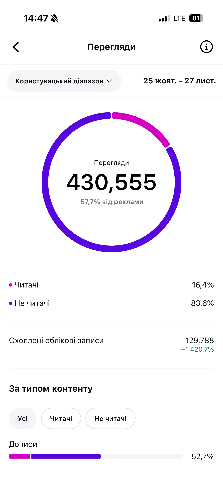
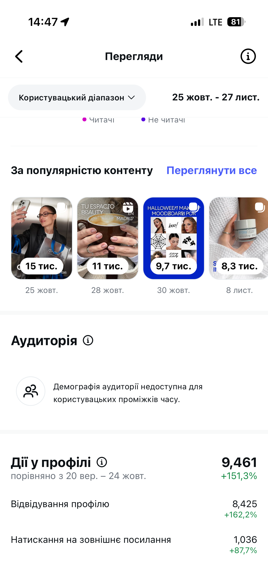
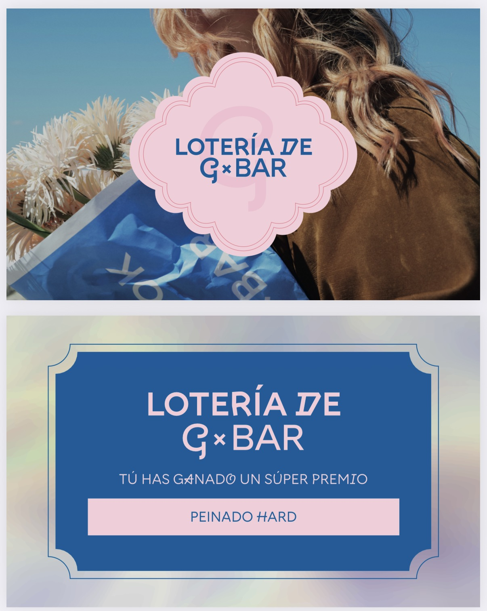
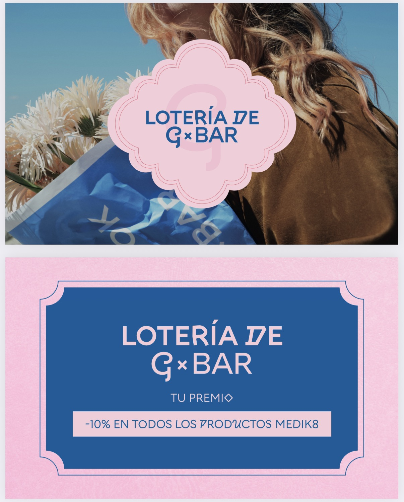

Відомий бренд, але новий ринок
До нас звернулася співвласниця G×Bar Madrid. Бренд уже мав сильну репутацію серед українок за кордоном, але цього було недостатньо для розвитку бізнесу в Іспанії. Основною аудиторією мали стати місцеві мешканки, адже саме вони формують більшу частину beauty-ринку Мадрида.
Нашою задачею було повністю переформатувати комунікацію: адаптувати Instagram під локальну аудиторію, змінити контент-стратегію та побудувати систему, яка регулярно залучатиме нових клієнток із Мадрида.
Недостатньо просто перекласти контент іспанською
Головний виклик полягав у тому, що потрібно було змінити не мову, а підхід.
Українська та іспанська beauty-культура суттєво відрізняються. Якщо українські клієнтки регулярно роблять манікюр, складні фарбування чи комплексні процедури, то іспанки зовсім інакше ставляться до догляду за собою.
Тому ми відмовилися від універсальної стратегії мережі та почали будувати окрему систему саме під локальний ринок.
Ми проаналізували конкурентів, дослідили поведінку місцевої аудиторії та змінили акценти в контенті. Замість стандартних beauty-публікацій почали більше демонструвати трансформації, атмосферу салону, команду, результати процедур і ті послуги, які дійсно цікаві іспанкам.
Не просто SMM, а повна система роботи
Робота над проєктом виходила далеко за межі ведення Instagram.
Щотижня ми проводили стратегічні зустрічі, аналізували статистику, переглядали результати реклами, формували нові гіпотези, шукали актуальні інфоприводи, планували партнерства та коригували контент відповідно до поведінки аудиторії. Саме ця системна робота стала основою розвитку проєкту.
Матеріали стратегічних сесій


Паралельно ми:
- адаптували стратегію під локальний ринок
- створили новий рубрикатор
- перебудували контент-план
- організували регулярні зйомки
- аналізували конкурентів
- тестували різні маркетингові гіпотези
- впровадили систему аналітики, яка допомагала приймати рішення на основі цифр, а не припущень
Кожне рішення на основі цифр
Одним із головних інструментів роботи стала регулярна аналітика. Щотижня ми аналізували перегляди акаунту, охоплення, взаємодії, ERR, клікабельність, ліди та ефективність окремих форматів контенту. Це дозволяло швидко знаходити сильні рішення та масштабувати їх.

Лише за перший місяць роботи на органіці акаунт отримав 104 975 органічних переглядів, охопив 9 228 акаунтів та зібрав 599 взаємодій.
Перший місяць роботи


Крім цього, за місяць було отримано 50 лідів, що підтвердило ефективність нової системи роботи.
Окремим позитивним сигналом стало поступове збільшення частки аудиторії саме з Мадрида — тобто контент усе краще почав працювати на локальний ринок.
Масштабування результатів за допомогою реклами
Ми не обмежилися одним рекламним запуском, а побудували систему постійного тестування.
Просували різні напрямки салону, тестували різні офери, креативи, посадкові сторінки та рекламні воронки. Для кожного запуску аналізували CTR, вартість результату, переходи на сайт, заявки через директ та конверсію у запис.
Приклади рекламних макетів
Окремо ми:
- побудували кілька рекламних воронок
- налаштували автоматичні повідомлення для нових підписників
- підготували окремі рекламні пропозиції під різні послуги
- налаштували бота на кодові слова з рекламних макетів для автоматизації обробки заявок
Такий підхід дозволив відстежувати повний шлях клієнта — від першого контакту з рекламою до запису в салон.
Показники за місяць
На скриншотах нижче можна побачити різницю між показниками до та після запуску рекламних кампаній.




За цей період:
- загальна кількість переглядів зросла зі 102 210 до 430 555
- охоплення акаунта збільшилося з 8 076 до 129 788
- кількість відвідувань профілю зросла з 2 842 до 8 425
- переходи на сайт збільшилися з 467 до 1 036
Ці результати підтвердили, що реклама працювала не лише на залучення заявок, а й суттєво підсилила впізнаваність бренду, збільшила кількість взаємодій із профілем та допомогла масштабувати органічні результати.
Враховуючи кількість реєстрацій нових клієнтів у звітний період, ми можемо розрахувати орієнтовну вартість клієнта. Кількість нових реєстрацій у системі — 102. Витрачений загальний бюджет на рекламу — 687,12 євро. Вартість 1 клієнта — 6,74 євро.
Ми працювали як повноцінний маркетинговий партнер
Разом із клієнтом аналізували результати, тестували нові гіпотези, планували маркетингові активності та приймали рішення на основі отриманих результатів.
Окрім цього, ми закривали й суміжні задачі: розробили поліграфічну продукцію — візитівки, листівки та банери у фірмовому стилі бренду.
А до Чорної п'ятниці підготували окремий креативний запуск з анімованим відеомонтажем, забезпечивши комплексну реалізацію кампанії — від ідеї до запуску.
Квитки для лотереї на Чорну п'ятницю


Як виглядала наша система
Аналіз ринку
Дослідили конкурентів, локальний beauty-ринок та поведінку аудиторії Мадрида
Адаптація стратегії
Перебудували позиціонування та комунікацію під місцевих клієнток
Системна організація роботи
Щотижневі мітинги, аналітика, тестування гіпотез, планування контенту, рекламних кампаній і партнерських активностей
Постійна аналітика
Регулярно аналізували показники акаунту, ефективність контенту та реклами, щоб швидко масштабувати найкращі рішення
Реклама
Створили кілька рекламних воронок, протестували різні офери та побудували шлях користувача від реклами до запису
Комплексний маркетинг
Поліграфія, сезонні кампанії, автоматизація комунікації та маркетингові активності під ключ
Що дала системна робота
За час роботи над проєктом ми оптимізували маркетингові процеси, адаптували комунікацію під локальну аудиторію та протестували десятки контентних і рекламних гіпотез.
Регулярна аналітика допомогла покращити показники акаунту, масштабувати результати за допомогою реклами та зробити маркетингові активності більш ефективними.
Ми не шукали одне «ідеальне» рішення — натомість постійно тестували нові підходи, аналізували результати та вдосконалювали стратегію, щоб знаходити найефективніші інструменти для розвитку проєкту.